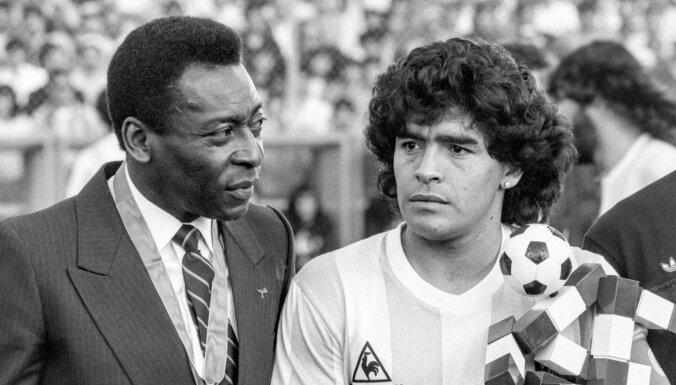

Djego Armando Maradona Lanusa — 2020 . gada 25. novembris , Dike Luján ) ir Argentīnas futbolists , kurš spēlēja kā uzbrūkošais pussargs . Viņš spēlēja Argentinos Juniors , Boca Juniors , Barcelona , Napoli , Sevilla un Newell's Old Boys klubos , kā arī Argentīnas izlasē. . 1986. gada pasaules čempions , 1990. gada pasaules vicečempions . Pasaules jaunatnes čempions 1979 . 1986. gada Pasaules kausa labākais spēlētājs . Dienvidamerikas gada futbolists 1979. un 1980. gadā. Divas reizes Pasaules čempionātu simboliskajās komandās . Argentīnas čempions ar Boca Juniors. Divkārtējs Itālijas čempions klubā "Napoli". 20. gadsimta labākais futbolists , balsojot oficiālajā FIFA vietnē , kur ieguva 53,6% balsu; Pēc FIFA Futbola komisijas datiem Maradona ir 3. futbolists 20. gadsimtā . Saskaņā ar IFFIIS aptauju viņš ieņem 5. vietu starp 20. gadsimta pasaules labākajiem futbolistiem. Ierindota 2. vietā starp 20. gadsimta labākajiem spēlētājiem saskaņā ar žurnālu World Soccer . Ierindota otrajā vietā starp 20. gadsimta labākajiem spēlētājiem pēc France Football žurnāla datiem . Ierindota 2. vietā starp 20. gadsimta labākajiem spēlētājiem pēc Guerin Sportivo datiem . Ierindota 2. vietā starp labākajiem spēlētājiem futbola vēsturē pēc žurnāla Placar datiem. Viņš ir labākais futbolists Pasaules kausa izcīņas vēsturē saskaņā ar The Times . Iekļauts FIFA 100 . Goda " Zelta bumbas " pirmais īpašnieks [9] . Itālijas futbola slavas zāles dalībnieks nominācijā "labākais ārzemju spēlētājs" [10] . Visu FIFA Pasaules kausu labāko spēlētāju simboliskās komandas dalībnieks [11] . Dienvidamerikas vēsturē labāko spēlētāju simboliskās komandas dalībnieks [12] . 1999. gadā Maradona tika atzīta par Argentīnas 20. gadsimta labāko sportisti [13] . Vārtu autors pret Anglijas izlasi , saukts par gadsimta vārtiem", un atzīts par labāko vārtu guvumu pasaules čempionātu vēsturē [14] ; tajā pašā spēlē bumbiņu ielika ar roku, šis gadījums ir pazīstams kā " Dieva roka ". Maradona ir Buenosairesas un Neapoles goda pilsonis . Kluba Argentinos Juniors stadions , kas tika atklāts 2003. gada 26. decembrī, viņa debijas dienā komandā , un Napoli kluba stadions ir nosaukts Djego vārdā . 2005. gada jūnijā Maradona saņēma Faustino Sarmiento balvu no Argentīnas Senāta . Maradona sporta karjera tika saīsināta narkotiku atkarības dēļ , kā rezultātā viņš uz kādu laiku bija spiests pamest futbolu diskvalifikācijas un ārstēšanas dēļ. Turklāt Maradona tika iesaistīta vairākās tiesvedībās, tostarp arests 1991. gada aprīlī par kokaīna glabāšanu un divu gadu nosacīts sods, ko viņš saņēma 1999. gadā par šaušanu ar gaisa šauteni uz žurnālistiem 1994. gada vasarā. Pēc spēlētāja karjeras pabeigšanas Maradona strādāja par televīzijas komentētāju Argentīnas un Itālijas kanālos. No 2005. gada jūnija līdz 2006. gada augustam viņš bija Boca Juniors futbola komisijas viceprezidents. Viņš filmējās vairākās filmās. No 2008. gada oktobra līdz 2010. gada jūlijam Maradona strādāja par Argentīnas izlases galveno treneri., ar kuru sasniedza 2010. gada Pasaules kausa ceturtdaļfinālu
.